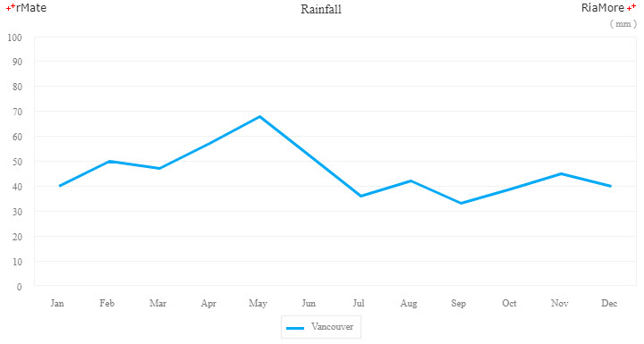
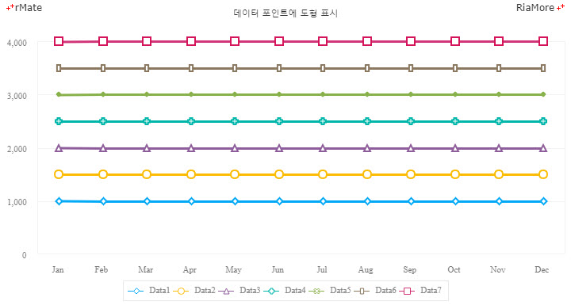
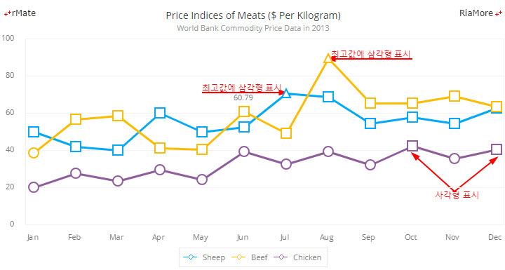
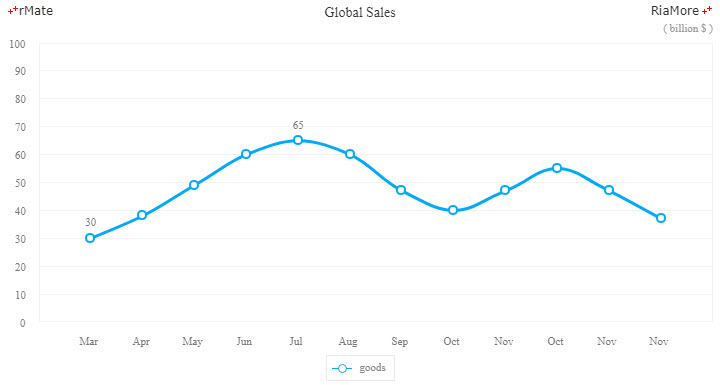
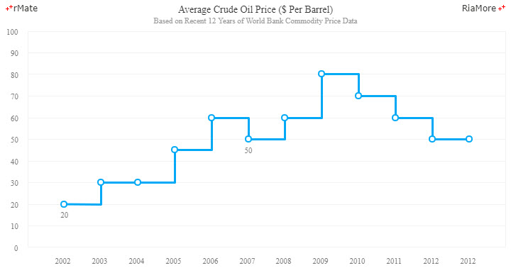
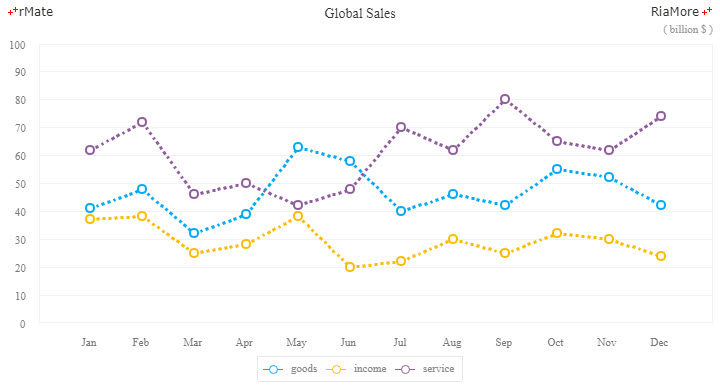
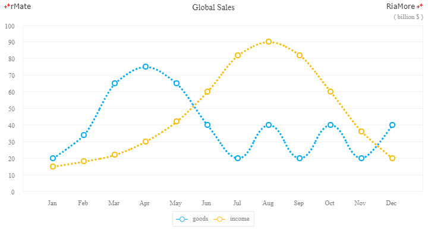
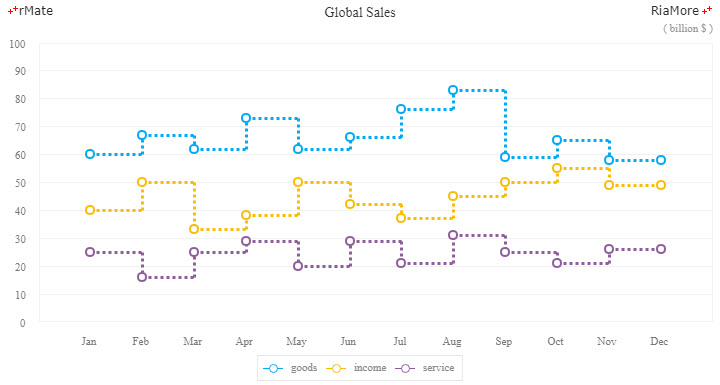
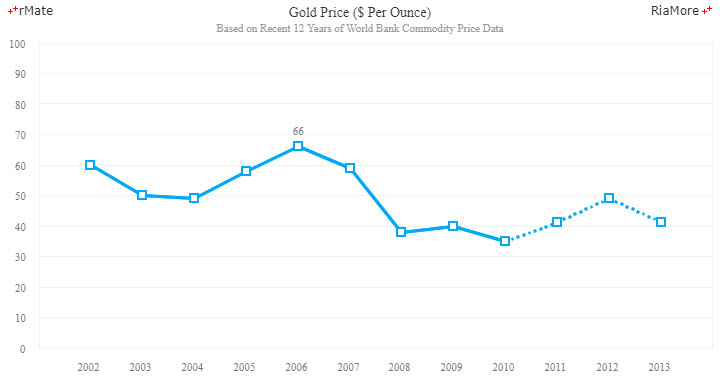
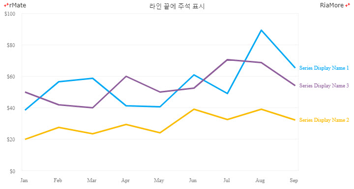

라인 차트
라인 차트는 여러 분야에서 일반적으로 많이 활용되는 차트 종류 중의 하나로써 일련의 데이터 포인트들을 선으로 연결하여 표현하는 차트입니다.
라인 차트는 <Line2DChart> 노드의 series 속성값에 <Line2DSeries> 노드를 설정하여 생성할 수 있습니다.
라인 차트에서 그려지는 선의 형태는 <Line2DSeries> 노드의 form 속성을 통해서 설정할 수 있습니다.
다음에는 form 속성에 설정 가능한 값과 이에 따른 표현 방식이 설명되어 있습니다.
- segment: 각 데이터 포인트를 직선으로 연결합니다. (기본값)
- curve: 각 데이터 포인트를 곡선으로 연결합니다.
- step: 수평 직선으로 시작해서 각 데이터 포인트를 계단선으로 연결합니다.
- reverseStep: 수직 직선으로 시작해서 각 데이터 포인트를 계단선으로 연결합니다.
직선 라인 차트
다음은 선의 모양을 직선으로 표현하는 직선 라인 차트를 생성하는 코드와 이를 적용해서 출력한 차트의 예제입니다.
<Line2DChart showDataTips="true" dataTipDisplayMode="axis">
...
<series>
<Line2DSeries form="segment" yField="Vancouver" displayName="Vancouver">
<showDataEffect>
<SeriesClip duration="1000"/>
</showDataEffect>
</Line2DSeries>
</series>
<annotationElements>
<CrossRangeZoomer enableZooming="false" horizontalLabelFormatter="{numFmt}" horizontalStrokeEnable="false"/>
</annotationElements>
</Line2DChart>

See the CodePen 알메이트 차트 - 직선 라인 차트
- 주의
form 속성의 기본값이
“segment” 이므로 form 속성을 설정하지 않으면 자동으로 segment(직선) 형의 라인 차트가 생성됩니다.
데이터 포인트에 도형 표시
라인 차트에서 <Line2DSeries> 노드의 itemRenderer 속성(기본값: “none”)을 설정하여 데이터 포인트에 특정한 모양의 도형을 표시할 수 있습니다.
itemRenderer 속성에 설정 가능한 값과 표시되는 도형의 모양은 다음과 같습니다.
- CircleItemRenderer: 데이터 포인트에 원을 표시합니다.
- TriangleItemRenderer: 데이터 포인트에 삼각형을 표시합니다.
- RectangleItemRenderer: 데이터 포인트에 사각형을 표시합니다.
- DiamondItemRenderer: 데이터 포인트에 다이아몬드를 표시합니다.
- CrossItemRenderer: 데이터 포인트에 십자형을 표시합니다.
- XShapeItemRenderer: 데이터 포인트에 X자 모양을 표시합니다.
- IShapeItemRenderer: 데이터 포인트에 I자 모양을 표시합니다.
다음은 7 가지 데이터 렌더러를 통해서 라인 차트의 데이터 포인트에 도형을 표시하는 코드와 이를 적용해서 출력한 차트의 예제입니다.
도형의 크기는 radius 속성을 통해서 조절이 가능하고 도형의 내부에 칠해지는 색은 fill 속성(이 예제에서는 #ffffff)을 통해서 설정이 가능합니다.
<Line2DChart showDataTips="true">
...
<series>
<Line2DSeries yField="Data1" radius="6" displayName="Data1" itemRenderer="DiamondItemRenderer" fill="#ffffff" />
<Line2DSeries yField="Data2" radius="6" displayName="Data2" itemRenderer="CircleItemRenderer" fill="#ffffff" />
<Line2DSeries yField="Data3" radius="6" displayName="Data3" itemRenderer="TriangleItemRenderer" fill="#ffffff" />
<Line2DSeries yField="Data4" radius="6" displayName="Data4" itemRenderer="CrossItemRenderer" fill="#ffffff" />
<Line2DSeries yField="Data5" radius="6" displayName="Data5" itemRenderer="XShapeItemRenderer" fill="#ffffff" />
<Line2DSeries yField="Data6" radius="6" displayName="Data6" itemRenderer="IShapeItemRenderer" fill="#ffffff" />
<Line2DSeries yField="Data7" radius="6" displayName="Data7" itemRenderer="RectangleItemRenderer" fill="#ffffff" />
</series>
</Line2DChart>

See the CodePen 알메이트 차트 - 데이터 포인트에 도형 표시
동일 라인에 다른 도형 표시
라인에 표시되는 도형은 시리즈 노드의 itemRenderer 속성에 설정되기 때문에 한 라인(데이터 시리즈)의 데이터 포인트들에는 모두 동일한 도형이 표시됩니다.
만약 데이터의 값에 따라서 도형의 종류를 다르게 표시하고자 할 경우에는 <Line2DSeries> 노드의 itemRendererJsFunction 속성에 자바스크립트 함수명을 지정하여 구현할 수 있습니다.
다음은 세 개의 라인에 각 데이터 포인트들의 값에 따라서 다른 도형을 표시하는 예제입니다.
<series>
<Line2DSeries yField="Sheep" fill="#ffffff" radius="8" displayName="Sheep" itemRenderer="DiamondItemRenderer" itemRendererJsFunction="itemRendererFunc" />
<Line2DSeries labelPosition="up" yField="Beef" fill="#ffffff" radius="8" displayName="Beef" showValueLabels="[5]" itemRenderer="DiamondItemRenderer" itemRendererJsFunction="itemRendererFunc" />
<Line2DSeries yField="Chicken" fill="#ffffff" radius="8" displayName="Chicken" itemRenderer="DiamondItemRenderer" itemRendererJsFunction="itemRendererFunc" />
</series>
function itemRendererFunc(id, index, data, values) {
if(values[1] < 40)
return "CircleItemRenderer";
else if(values[1] < 70)
return "RectangleItemRenderer";
else
return "TriangleItemRenderer";
}

See the CodePen 알메이트 차트 - 동일 라인에 다른 도형 표시
곡선 라인 차트
다음은 선의 모양을 곡선으로 표현하는 곡선 라인 차트를 생성하는 코드와 이를 적용해서 출력한 차트의 예제입니다.
이 예제에서는 데이터 포인트에 원(CircleItemRenderer)이 표시되며, 처음과 다섯 번째 데이터 포인트(showValueLabels = “[0, 4]”)의 위(labelPosition = “up”)에 데이터 값(레이블)이 표시되도록 설정되었습니다.
<Line2DChart showDataTips="true" >
...
<series>
<Line2DSeries form="curve" itemRenderer="CircleItemRenderer" labelPosition="up" yField="goods" displayName="goods" showValueLabels="[0,4]">
<showDataEffect>
<SeriesInterpolate duration="1000"/>
</showDataEffect>
</Line2DSeries>
</series>
</Line2DChart>

See the CodePen 알메이트 차트 - 곡선 라인 차트
계단 라인 차트
다음은 계단 선 모양을 표현하는 계단 라인 차트를 생성하는 코드와 이를 적용해서 출력한 차트의 예제입니다.
이 예제에서는 데이터 포인트에 원(CircleItemRenderer)이 표시되며, 처음과 여섯 번째 데이터 포인트(showValueLabels = “[0, 5]”)의 아래(labelPosition = “down”)에 데이터 값(레이블)이 표시되도록 설정되었습니다.
<Line2DChart showDataTips="true" >
...
<series>
<Line2DSeries labelPosition="down" showValueLabels="[0,5]" yField="Price" form="step" radius="5" itemRenderer="CircleItemRenderer" displayName="$ Per Barrel">
<showDataEffect>
<SeriesInterpolate/>
</showDataEffect>
</Line2DSeries>
</series>
</Line2DChart>

See the CodePen 알메이트 차트 - 계단 라인 차트
점선 라인 차트
라인 차트에 표시되는 선을 직선이 아닌 점선으로 표현이 가능합니다.
<Line2DSeries> 노드의 lineStyle 속성을 “dashLine” 으로 설정하면 점선이 표현됩니다.
점선의 길이에 관한 설정은 다음에서 설명하는 속성을 참조하십시요.
| 속성명 |
유효값 (*: 기본값) |
설명 |
| dashLinePattern |
숫자
기본값: 10
|
점선의 길이를 픽셀 단위로 지정합니다.
예를 들어 값이 “5” 이면 5px 길이의 선과 5px 길이의 공백이 반복해서 표현됩니다.
|
다음은 dashLinePattern 속성값을 “3” 으로 설정하여 점선을 표시하는 코드와 이를 적용해서 출력한 차트의 예제입니다.
<Line2DSeries yField="goods" lineStyle="dashLine" dashLinePattern="3" itemRenderer="CircleItemRenderer" radius="5" displayName="goods" />
<Line2DSeries yField="income" lineStyle="dashLine" dashLinePattern="3" itemRenderer="CircleItemRenderer" radius="5" displayName="income" />
<Line2DSeries yField="service" lineStyle="dashLine" dashLinePattern="3" itemRenderer="CircleItemRenderer" radius="5" displayName="service" />

See the CodePen 알메이트 차트 - 점선 라인 차트
곡선 라인 차트나 계단 라인 차트에도 점선을 표현할 수 있습니다.
다음은 form 속성값을 “curve”, lineStyle 속성값을 “dashLine” 으로 설정하는 코드와 이를 적용해서 출력한 차트의 예제입니다.
<Line2DChart showDataTips="true">
...
<series>
<Line2DSeries yField="goods" fill="#ffffff" radius="5" form="curve" lineStyle="dashLine" dashLinePattern="3" itemRenderer="CircleItemRenderer" displayName="goods" />
<Line2DSeries yField="income" fill="#ffffff" radius="5" form="curve" lineStyle="dashLine" dashLinePattern="3" itemRenderer="CircleItemRenderer" displayName="income" />
</series>
</Line2DChart>

See the CodePen 알메이트 차트 - 곡선 점선 라인 차트
다음은 form 속성값을 “step”, lineStyle 속성값을 “dashLine” 으로 설정하는 코드와 이를 적용해서 출력한 차트의 예제입니다.
<Line2DChart showDataTips="true">
...
<series>
<Line2DSeries fill="#ffffff" yField="goods" radius="5" form="step" lineStyle="dashLine" dashLinePattern="3" itemRenderer="CircleItemRenderer" displayName="goods" />
<Line2DSeries fill="#ffffff" yField="income" radius="5" form="step" lineStyle="dashLine" dashLinePattern="3" itemRenderer="CircleItemRenderer" displayName="income" />
<Line2DSeries fill="#ffffff" yField="service" radius="5" form="step" lineStyle="dashLine" dashLinePattern="3" itemRenderer="CircleItemRenderer" displayName="service" />
</series>
</Line2DChart>

See the CodePen 알메이트 차트 - 계단 점선 라인 차트
점선과 직선을 한 라인에 표현
라인 차트에서 한 라인에 점선과 직선을 함께 표현할 수 있습니다.
이 때 점선이 시작되는 위치는 <Line2DSeries> 노드에 설정되는 다음 속성들에 의해서 결정됩니다.
| 속성명 |
유효값 (*: 기본값) |
설명 |
| dashLinePlacement |
before(*), after
|
dashLineSeperatePos 속성에 설정된 데이터 아이템 이전 혹은 이후에 점선을 표시할지 여부를 지정합니다.
|
| dashLineSeperatePos |
숫자
기본값: 0
|
점선이 표시되기 시작(혹은 종료)하는 기준이 되는 데이터 아이템을 지정합니다.
|
다음은 9 번째 데이터 포인트(dashLineSeperatePos = “8”) 이후(dashLinePlacement = “after”)에 점선을 표시하는 코드와 이를 적용해서 출력한 차트의 예제입니다.
<Line2DChart showDataTips="true" >
...
<series>
<Line2DSeries lineStyle="dashLine" dashLinePattern="3" dashLineSeperatePos="8" dashLinePlacement="after" labelPosition="up" showMaxValueLabel="true" yField="Price" radius="5" itemRenderer="RectangleItemRenderer" displayName="($ Per Ounce)" />
</series>
</Line2DChart>

See the CodePen 알메이트 차트 - 점선과 직선을 한 라인에 표현
라인 끝에 주석 표시
여러 개의 데이터 시리즈 값들을 표현하는 라인들이 함께 표시되어 있는 경우, 차트에 범례가 있더라도 범례 항목과 해당 데이터 시리즈를 표현하는 라인을 직관적으로 알아보기 어려울 수 있습니다.
이 경우 라인 차트의 라인 끝에 해당 데이터 시리즈의 설명을 표시하면 차트를 직관적으로 이해하기에 도움이 됩니다.
라인의 끝에 설명을 표시하기 위해서는 <Line2DChart> 노드의 endPointDisplayName 속성을 “true” 로 지정합니다.
다음은 이에 대한 코드와 이를 적용해서 출력한 차트의 예제입니다.
<Line2DChart showDataTips="true" gutterTop="6" endPointDisplayName="true" dataTipDisplayMode="axis">
...
<series>
<Line2DSeries yField="Data1" displayName="Series Display Name 1" />
<Line2DSeries yField="Data2" displayName="Series Display Name 2" />
<Line2DSeries yField="Data3" displayName="Series Display Name 3" />
</series>
</Line2DChart>

See the CodePen 알메이트 차트 - 라인 끝에 주석 표시